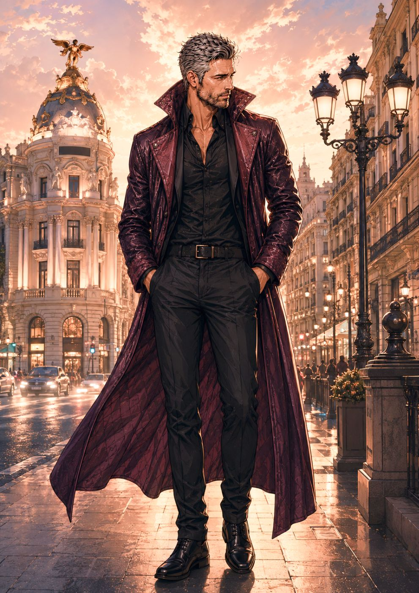

Aquella vez · Manual de español
Unidad 9
Órdenes, comparaciones y misterios
Esta unidad todavía no está disponible. Se abrirá más adelante.

Aquella vez · Manual de español
Órdenes, comparaciones y misterios
Esta unidad todavía no está disponible. Se abrirá más adelante.
